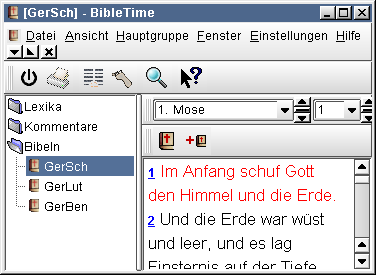
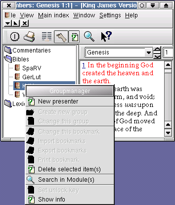
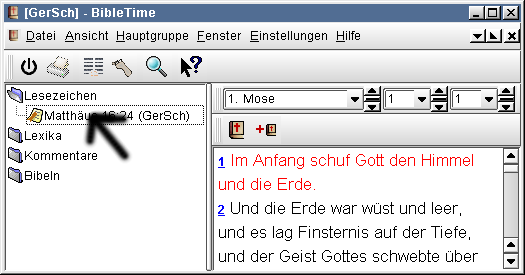

Um ein Dokument auszuwählen klicken Sie einfach auf die verlangte Dokumentengruppe (Bibeln, Kommentare oder Lexika) um den Inhalt der Dokumentengruppe anzuzeigen. Um ein Dokument zu öffnen klicken Sie auf dessen Symbol. Um das Dokument noch einmal zu öffnen klicken Sie erneut auf das Symbol.

 | Hier funktioniert Drag |
Ein Dokument kann von einem bereits geöffneten Dokument geöffnet werden. Klicken Sie einfach auf eine Versnummer (Mauscursor ändert sich zu einer Hand) und ziehen Sie sie zu der Modulliste. Lassen Sie sie hier auf dem Namen des von Ihnen gewünschten Modules fallen und dieses Modul wird an der Stelle der Versnummer geöffnet. Wenn Sie eine Versnummer auf ein bereits geöffnetes Modul ziehen wird dieses automatisch die gewünschte Stelle anzeigen. Dies funktioniert nur für Bibeln und Kommentare.
Es gibt zwei weitere Funktionen, die durch rechts-klick auf den Modulnamen verfügbar sind. "Zeige Information" öffnet ein Fenster mit Informationen über Copyright und anderen sachdienlichen Dingen über das gewählte Dokument. "Entschlüssele Modul" öffnet einen kleinen Dialog für verschlüsselte Module. Dies erlaubt denjenigen, die den Schlüssel haben, diesen einzugeben und das Dokument so für Menschen lesbar zu machen. Die Crosswire Bibelgesellschaft muss Module verschlüsseln, es sei denn der Besitzer des Copyrights gibt die Erlaubnis zur Verbreitung als Swordmodul oder wenn der Text in öffentlichen Besitz übergegangen ist (das Copyright ist abgelaufen). Für Informationen über verschlüsselte Module sehen Sie bitte auf der Crosswire Webseite nach.
Sie können in einem Modul suchen, indem Sie mit der rechten Maustas auf den Modulnamen in der Liste der Module klicken und "Suche in Modul(en)..." auswählen. Durch gleichzeitiges drücken der SHIFT Taste und klicken auf andere Modulnamen können Sie mehr als eines auswählen. Folgen Sie der gleichen Prozedur um diese zu durchsuchen.

| Drag funktioniert hier |
